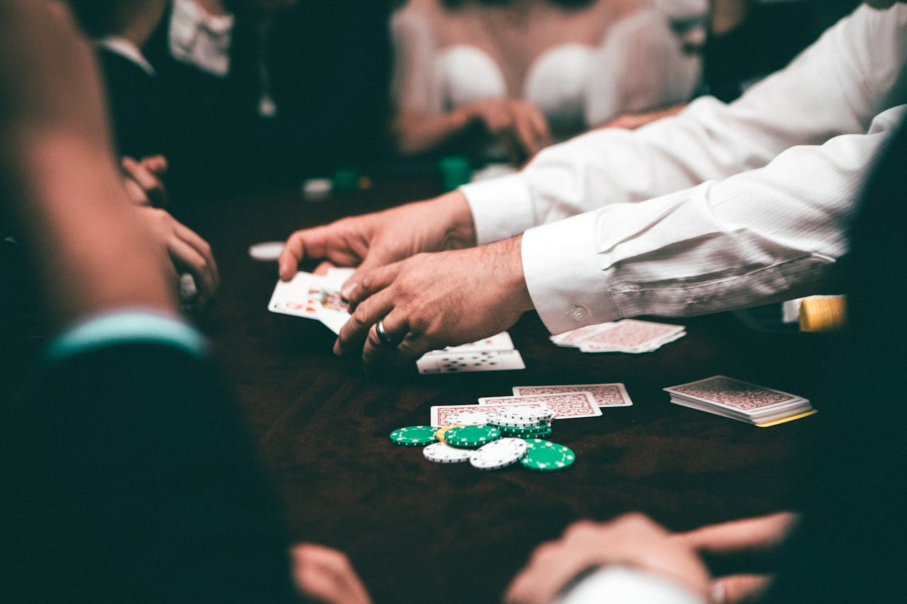
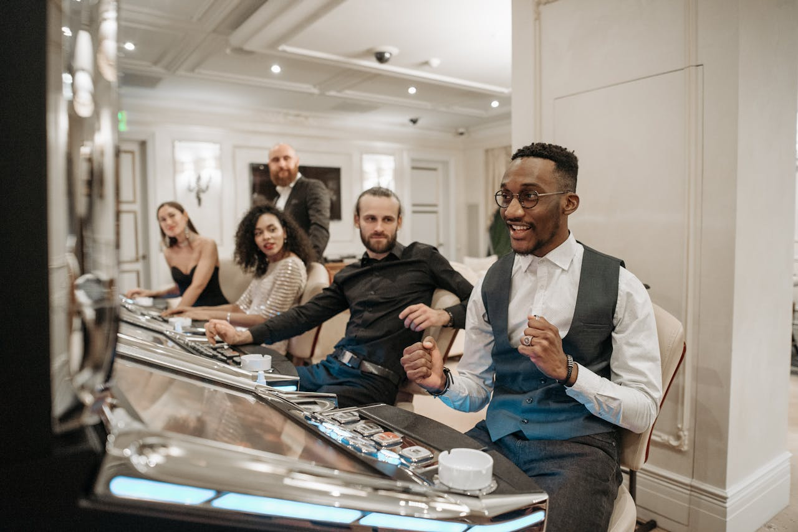
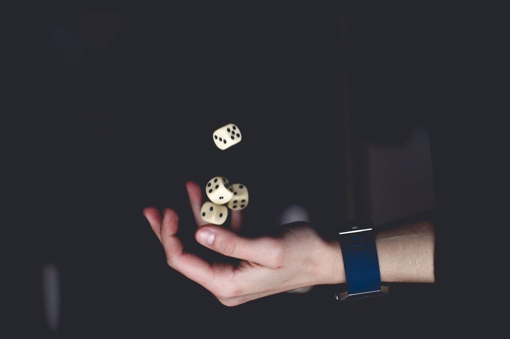

<html lang="en"></html>
  <head>
    <meta charset="utf-8">
    <meta name="viewport" content="width=device-width, initial-scale=1">
    <title>Shakur</title>
    <link rel="stylesheet" href="https://stackpath.bootstrapcdn.com/bootstrap/4.5.2/css/bootstrap.min.css">
    <link rel="stylesheet" href="/css/style.css">
    <link rel="stylesheet" href="/css/animate.css">
    <link rel="stylesheet" href="/css/responsive.css">
    <link href="https://unpkg.com/aos@2.3.1/dist/aos.css" rel="stylesheet">
    <link rel="stylesheet" href="https://cdn.jsdelivr.net/npm/bootstrap-icons@1.11.3/font/bootstrap-icons.min.css">
    <style>
      .custom-btn {
          display: inline-block;
          padding: 12px 24px;
          font-size: 16px;
          font-weight: bold;
          text-transform: uppercase;
          color: #fff;
          background-color: #4CAF50;
          border: none;
          border-radius: 50px;
          box-shadow: 0 8px 15px rgba(0, 0, 0, 0.1);
          transition: all 0.3s ease-in-out;
          cursor: pointer;
          text-align: center;
      }

      .custom-btn:hover {
          background-color: #45a049;
          box-shadow: 0 15px 20px rgba(0, 0, 0, 0.3);
          transform: translateY(-3px);
      }

      .custom-btn:active {
          transform: translateY(-1px);
          box-shadow: 0 10px 15px rgba(0, 0, 0, 0.2);
      }
  </style> 
</head>
  <body>

    <button class="scroll-btn" id="myBtn" onclick="topFunction()">
      <i class="bi bi-arrow-up"></i>
    </button>


    <div class="wrapper">

      <!--nav-->
      <nav class="navbar navbar-expand-lg navbar-light bg-light px-0 py-3 fixed-top">
        <div class="container-xl max-w-screen-xl">
          <!-- Logo -->
          <a id="logo" class="navbar-brand" href="#">
            <h5>SHAKUR</h5>
          </a>
          <!-- Navbar toggle -->
          <button id="booton" class="navbar-toggler" type="button" data-bs-toggle="collapse" data-bs-target="#navbarCollapse" aria-controls="navbarCollapse" aria-expanded="false" aria-label="Toggle navigation">
            <!-- <span class="navbar-toggler-icon"></span> -->
            <i class=" bi bi-list"></i>
          </button>
          <!-- Collapse -->
          <div class="collapse navbar-collapse" id="navbarCollapse">
            <!-- Nav -->
            <ul class="text-center navbar-nav mx-lg-auto">
              <li class="nav-item">
                <a class="nav-link" href="index.html#hero">Home</a>
              </li>
              <li class="nav-item">
                <a class="nav-link" href="index.html#about">About</a>
              </li>
              <li class="nav-item">
                <a class="nav-link" href="index.html#samples">Writing samples</a>
              </li>
              <li class="nav-item">
                <a class="nav-link" href="#">Contact</a>
              </li>
              <li class="nav-item">
                <a class="nav-link" href="/images/ABDULSHAKUUR OLAOLUWA  AKINBAYO_Resume_Edited.pdf">My Resume</a>
              </li>
            </ul>
            <!-- Right navigation -->
            <!-- <div class=" text-center navbar-nav ms-lg-4">
              <a class="nav-item nav-link" href="#">Sign in</a>
            </div> -->
            <!-- Action -->
          </div>
        </div>
      </nav>

       <!--Header-->
       <header id="winning" class="masthead">
        <div class="container position-relative px-4 px-lg-5">
            <div class="row gx-4 gx-lg-5 justify-content-center">
                <div class="col-md-10 col-lg-8 col-xl-7">
                    <div class="post-heading">
                        <h1>The Psychology Behind Winning: Why Some Gamblers Always Succeed</h1>
                        <!-- <h2 class="subheading">Problems look mighty small from 150 miles up</h2> -->
                        <span class="meta">
                            Posted by
                            <a href="#!">Olaoluwa Adbulshakuur</a>
                            on June, 2022
                        </span>
                    </div>
                </div>
            </div>
        </div>
    </header>


    <!--Blog content-->
    <article class="mb-4">
        <div class="container px-4 px-lg-5">
            <div class="row gx-4 gx-lg-5 justify-content-center">
                <div class="col-lg-12 col-xl-7">
                  <p>
                    Winning in any field brings a sense of joy and accomplishment, 
                    but in gambling, it creates a psychological pull that can be both 
                    thrilling and addictive. At the heart of it is a powerful force: 
                    the brain’s natural response to victory. When we win, a flood of 
                    dopamine the “feel-good” chemical is released, creating a rush that
                     gamblers crave to experience again. This sensation is not only pleasant 
                     but deeply ingrained in human behavior, shaping everything from mood to 
                     mental sharpness. 
                  </p>
                  <p>
                    Gambling, by definition, involves risking something valuable
                     (usually money) on the outcome of a game or event. For many, 
                     it starts as a harmless activity, placing small bets for fun, 
                     often in social settings like casinos or through online platforms.
                      However, for some, gambling becomes a pursuit of that next big win,
                       where the excitement of victory and the pain of loss go hand in hand. 
                  </p>

                  <h2 class="section-heading">Winning and Its Powerful Grip </h2>
                  
                  <p>
                    Why does winning feel so good? It's not just because of the financial rewards, 
                    though those certainly play a role. As researcher Ian Robertson points out in
                     his book The Winner Effect, winning boosts testosterone levels, which in turn 
                     increases dopamine in the brain. This chemical chain reaction doesn’t just give
                      a momentary boost; it fuels the desire to keep winning and motivates people to
                       push themselves further. 
                  </p>

                  <p>
                    Winning also influences our social standing.
                     In any species, hierarchy is critical, and 
                     those higher in the pecking order tend to have 
                     better health and higher confidence. So, winning
                      is about more than feeling good—it can affect one’s 
                      overall well-being and outlook on life. 
                  </p>

                  <h2 class="section-heading">The Mindset of a Winner </h2>
                  
                  <p>
                      One of the keys to consistently winning lies in mindset.
                      A strong belief in oneself, combined with persistence and
                      the ability to bounce back from losses, forms the foundation
                      of success. It's the willingness to face challenges head-on 
                      that separates those who occasionally win from those who make
                      winning a regular habit. The quote from Steve Jobs—“Stay hungry,
                      stay foolish”—captures this perfectly. Whether you're at the peak 
                      or facing a setback, the mindset of always striving for better helps
                      winners stay ahead. 
                    </p>

                    <p>
                      Moreover, successful people do not rest after a single victory. 
                      They keep asking themselves how they can do even better next time,
                       continuously seeking ways to improve their game, no matter the field. 
                       This kind of drive is essential in gambling, where stakes can rise quickly, 
                       and complacency is never an option. 
                    </p>

                    <h2 class="section-heading">Winning Isn’t Just Luck—It’s Skill </h2>
                    <p>
                      While gambling is often seen as  game of chance,
                       for seasoned professionals, it's far more than that. 
                       Games like poker, blackjack, and sports betting require 
                       a strategic approach. Skill-based games allow gamblers to 
                       tip the odds in their favor by mastering the mechanics of 
                       the game and making calculated moves. 
                    </p>

                    <p>
                      In poker, for example, you're not playing against the house but other players.
                       This means that if you're better than your opponents, you can walk away with a win. 
                       Professional gamblers invest significant time in honing their skills, whether it’s 
                       studying probabilities, learning to read their opponents, or developing models to 
                       predict outcomes in sports betting. By mastering their craft, they can gain an edge
                      in a field where many rely solely on luck. 
                    </p>

                    <p>
                      Advantage play is another technique that professionals use to increase their chances.
                       Blackjack, for instance, offers an opportunity to count cards and use the casino’s 
                       own rules to win. Although casinos frown on these strategies and often catch on, 
                       skilled players are always finding ways to work within the system. 
                    </p>

                    <h2 class="section-heading">The Importance of Control </h2>
                    <p>
                      At the heart of gambling success is control. 
                      Successful gamblers are experts at managing their bankrolls. 
                      They know when to raise their stakes and when to cut their losses.
                       Unlike casual players, who may chase their losses, professionals 
                       set strict limits and stick to them. They don’t gamble away all 
                       their winnings on a lucky streak, nor do they throw good money after 
                       bad in the hope of recouping losses. It’s this discipline that allows them to stay in the game long enough to make a profit over time. 
                    </p>
                    <p>
                      Knowledge is another weapon in the professional gambler’s arsenal. 
                      Casinos are designed to work against you, using everything from the 
                      layout of the games to the lighting and music to keep you playing. 
                      Successful gamblers recognize these tactics and focus purely on the 
                      games themselves. By avoiding distractions and making decisions based 
                      on logic rather than emotion, they can minimize the house’s advantage. 
                    </p>

                    <h2 class="section-heading">Skill, Strategy, and Bankroll Management </h2>
                    <p>
                      A professional gambler is as much a strategist as they are a player. 
                      They exploit specific games where skill can come into play whether 
                      it’s counting cards, analyzing odds, or taking advantage of specific 
                      casino rules. But they also know when to walk away. The ability to manage 
                      their resources, knowing when to risk and when to pull back, is what allows 
                      them to continue playing without suffering huge losses. In the end, gambling
                       for professionals is about making smart choices based on probability, not just 
                       chasing the next thrill. 
                    </p>

                    <h2 class="section-heading">The Dark Side of Gambling </h2>
                    
                    <p>
                      Of course, gambling can take a darker turn. 
                      The rush of dopamine can lead people to pursue 
                      wins at all costs, losing track of time, money, 
                      and even their personal lives. Addiction is a real risk, 
                      and many gamblers find themselves trapped in a cycle of losses 
                      they can’t escape from. While the thrill of winning is undeniable,
                       it's essential to approach gambling with caution and always stay in control.
                    </p>


                </div>
            </div>
          </div>
    </article>


    <div class="container mt-5 mb-5">
      <div class="d-flex justify-content-between">
          <!-- Previous Button -->
          <a href="gem.html" class="custom-btn">
              &laquo; Previous
          </a>

          <!-- Next Button -->
          <a href="risk.html" class="custom-btn">
              Next &raquo;
          </a>
      </div>
  </div>

   <!-- Footer -->
   <footer class="footer mt-auto">
      <div class="container">
          <div class="row">
              <div class="col-lg-4 col-md-6 mb-4 mb-lg-0">
                  <h5>About Me</h5>
                  <p class="footerp text-white">
                      I’m a professional content writer with a passion for crafting engaging, informative, and SEO-friendly content.
                      Let’s work together to elevate your brand with powerful words.
                  </p>
              </div>
              <div class="col-lg-4 col-md-6 mb-4 mb-lg-0">
                  <h5>Quick Links</h5>
                  <ul class="list-unstyled">
                    <li><a href="#hero">Home</a><i class="bi bi-arrow-right"></i></li>
                    <li><a href="#samples">Work Samples</a><i class="bi bi-arrow-right"></i></li>
                    <li><a href="/images/ABDULSHAKUUR OLAOLUWA  AKINBAYO_Resume_Edited.pdf">My Resume</a><i class="bi bi-arrow-right"></i></li>
                </ul>
              </div>
              <div class="col-lg-4 col-md-12">
                <h5>Follow Me</h5>
                <div class="social-icons">
                    <a href="https://x.com/wordstylist03/"><i class="bi bi-twitter"></i></a>
                    <a href="https://www.linkedin.com/in/abdulshakuur-akinbayo-90328a319?utm_source=share&utm_campaign=share_via&utm_content=profile&utm_medium=ios_app"><i class="bi bi-linkedin"></i></a>
                </div>
            </div>
          </div>
          <hr>
          <div class="text-center">
              <p>&copy; 2024 Shakur. All Rights Reserved.</p>
          </div>
      </div>
  </footer>


<!--wrapper div below-->
</div>
<script src="https://stackpath.bootstrapcdn.com/bootstrap/4.5.2/js/bootstrap.min.js"></script>
<script src="/js/script.js"></script>
<script src="/js/wow.min.js"></script>
<script src="https://unpkg.com/aos@2.3.1/dist/aos.js"></script>
<script>
new WOW().init();
</script>
<script>
AOS.init();
</script>
<script src="https://cdn.jsdelivr.net/npm/bootstrap@5.3.3/dist/js/bootstrap.min.js" integrity="sha384-0pUGZvbkm6XF6gxjEnlmuGrJXVbNuzT9qBBavbLwCsOGabYfZo0T0to5eqruptLy" crossorigin="anonymous"></script> 
</body>
</html>